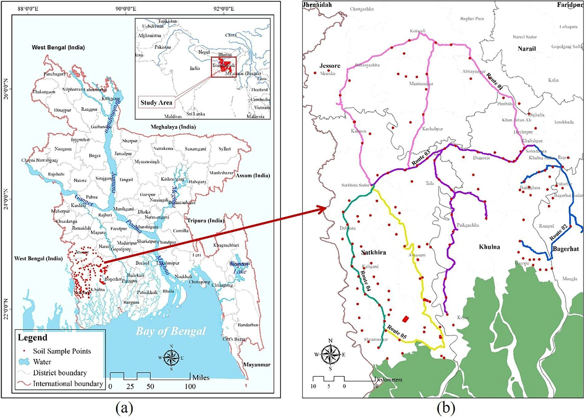
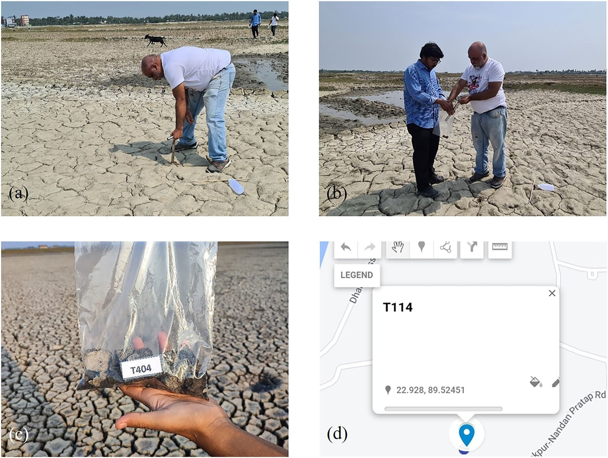

A rapidly changing coastal landscape
Saltwater intrusion, storm surges, reduced freshwater flow, groundwater extraction, shrimp aquaculture and polder-management challenges are reshaping agricultural land across southwest Bangladesh.
Field Observatory · GIS · Laboratory EC Analysis · Open Research Data
A field-to-laboratory topsoil observatory spanning Khulna, Satkhira and Jessore, designed to establish spatially dense, geocoded evidence of salinity across the arable lands of coastal southwest Bangladesh.
01 · Why This Observatory Matters
Saltwater intrusion, storm surges, reduced freshwater flow, groundwater extraction, shrimp aquaculture and polder-management challenges are reshaping agricultural land across southwest Bangladesh.
Existing coastal salinity datasets are often old, spatially sparse or focused on rivers and lakes rather than geocoded topsoil measurements across arable land.
The dataset creates a documented baseline that can support agricultural adaptation, soil-health monitoring, future remote sensing and a persistent community-driven salinity observatory.
The project turns individual soil bags, coordinates and conductivity readings into a regional evidence system.
02 · My Contribution
The published contribution statement credits Tanzim Al Noor with field data collection and writing through review and editing. The wider mapping, laboratory, validation and dataset workflow shown on this page represents the collaborative research team.
03 · Regional Field Campaign

study-area-routes.jpg · image unavailableThe western coastal district includes intensively cultivated and highly salinity-exposed areas linked to tidal systems and coastal polders.
Sampling extended through inland and coastal agricultural zones, including areas connected by roads, rivers and polder interiors.
The northern district contributes the inland portion of the observatory and supports interpretation of the regional salinity gradient.
04 · Reproducible Protocol
The workflow connects route design, geocoded composite sampling, controlled laboratory preparation and electrical-conductivity measurement.
Teams selected dry, open or fallow agricultural fields with clear sky visibility, recorded coordinates and photographs, and combined multiple subsamples into one representative site composite.

field-sampling-protocol.jpg · image unavailable05 · Spatial Salinity Evidence
The published bubble-density map uses both colour and symbol size to show the observed electrical conductivity at each sampling location.
 salinity-bubble-density-map.jpg · image unavailable
salinity-bubble-density-map.jpg · image unavailable
Select a mapped range to inspect how it functions in the published visualisation.
06 · Technical Validation
The laboratory followed the FAO soil electrical-conductivity procedure using a 1:5 soil-to-deionised-water mixture, controlled sieving, stirring and resting stages.
Conductivity readings were obtained with a HI-6321 advanced benchtop meter and documented alongside sample numbers and photographs of the setup and displayed measurement.
The spatial range and regional variability were compared with earlier salinity studies from coastal southwest Bangladesh and found to correspond closely in overall pattern.
07 · The Observatory Vision
The publication positions the campaign as an initial step toward a persistent, community-driven and co-active soil observatory.
Collect geocoded topsoil observations under documented land-use and field conditions.
Use field electrical-conductivity measurements to train, evaluate and refine future GIS and remote-sensing salinity models.
Identify locations where predictions remain uncertain or where coastal change may have made earlier observations less reliable.
Direct subsequent measurements toward locations that are most informative for agriculture, adaptation and model improvement.
Build a living coastal evidence base rather than a single static salinity snapshot.
08 · Publication Record
Received 7 January 2025, accepted 24 June 2025 and published 12 July 2025 in Scientific Data, volume 12, article 1204.
A Topsoil Salinity Observatory for Arable Lands in Coastal Southwest Bangladesh
Sarkar, S. K., Haydar, M., Rudra, R. R., Mazumder, T., Nur, M. S., Islam, M. S., Sany, S. M., Al Noor, T., Ahmed, S., Ahmad, M., Sakib, A., & Ravela, S. (2025). A Topsoil Salinity Observatory for Arable Lands in Coastal Southwest Bangladesh. Scientific Data, 12, 1204. https://doi.org/10.1038/s41597-025-05447-1
09 · Research Stack